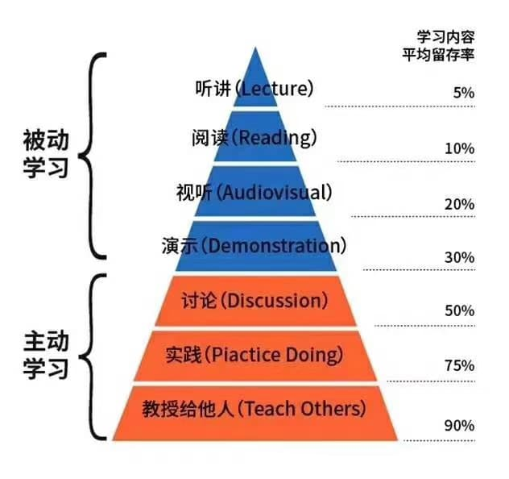

前言 为什么要优化if else逻辑判断呢？我们应该如何去优化它呢？优化它有什么意义呢？
在分享之前我们先看一段代码：
1 2 3 4 5 6 7 8 9 10 11 12 13 14 15 16 17 18 19 20 21 22 23 24 25 26 27 28 29 30 31 32 33 34 35 36 37 38 39 40 41 42 43 44 45 46 47 48 49 50 51 52 53 54 55 56 57 58 59 60 61 62 63 64 65 66 67 68 69 70 71 72 73 74 function check ( if (this .checkUsername(this .username)) { if (this .checkIdCard(this .idCard)) { if (this .checkTel(this .tel)) { if (this .dbr === '担保人是本人' ) { if (document .querySelector('.sfzzm img' )) { console .log('存在身份证正面' ) if (document .querySelector('.sfzfm img' )) { console .log('存在身份证反面' ) if (document .querySelector('.xlzs img' )) { console .log('存在学历证书' ) if (this .ydxy) { this .tijiaoIsShow = false } } else { Toast('请上传学历证书' ) this .tijiaoIsShow = true } } else { Toast('请上传身份证反面' ) } } else { Toast('请上传身份证正面' ) } } else if (this .dbr == '担保人不是本人' ) { if (this .checkUsername(this .dbrname)) { if (this .checkIdCard(this .dbridCard)) { if (this .checkTel(this .dbrzyzh)) { if (document .querySelector('.sfzzm img' )) { console .log('存在身份证正面' ) if (document .querySelector('.sfzfm img' )) { console .log('存在身份证反面' ) if (document .querySelector('.xlzs img' )) { console .log('存在学历证书' ) this .tijiaoIsShow = false } else { Toast('请上传学历证书' ) } } else { Toast('请上传身份证反面' ) } } else { Toast('请上传身份证正面' ) } } else { Toast('请输入担保人展业证号' ) } } else { Toast('请输入担保人身份证号' ) } } else { Toast('请输入担保人姓名' ) } } else { Toast('请选择担保人是否为本人' ) } } else { Toast('请输入正确的电话号码' ) } } else { Toast('请输入正确的身份证号' ) } } else { Toast('请输入正确的姓名' ) } }
看完这样一个代码后，相信大家和我的心情是一样的：
因为我们每次维护时要记住好几个逻辑判断分支，才能知道到底什么情况下才能得到那个结果，这种代码的可读性和可维护性自然就比较低了。
箭头式代码。
那我这次分享的目的就是通过优化某种场景下的if else语句，使得优化后的代码看着比较清爽，从而提高代码的可读性和可维护性。
那接下来我就带大家了解一下具体场景下的if else优化方法有哪些，先从简单的场景入手。
单个if语句优化策略 需求：当条件为真时打印出日志内容
优化前
1 2 3 4 5 6 7 8 let flag = true ;if (flag) { log(); } function log ( console .log('如果flag值为真的时候打印这段文字' ); }
优化后
1 2 3 4 5 6 let flag = true ;flag && log(); function log ( console .log('如果flag值为真的时候打印这段文字' ); }
好处：代码在一行很清晰，简洁，好读。
单个if else语句优化策略 提前return 需求：执行登录操作，如果用户名和密码输入框为空，那么我们就提示用户”用户名和密码不能为空”类似信息；如果都不为空，那我们就执行登录的操作。
优化前
1 2 3 4 5 6 7 8 let user = 'silu' ;let password = 'solution' ;if (user && password) { } else { return '用户名和密码不能为空' ; }
优化后：排非策略，先排除为false的情形，通过后再执行为true时的业务逻辑
1 2 3 4 5 6 7 let user = 'silu' ;let password = 'solution' ;if (!user || !password ) return '用户名和密码不能为空' ; }
好处：可以干掉else，减少代码分支，提高代码的可维护性和可阅读性。
使用条件三目运算符 使用场景：在不影响可读性的情况下，处理if else分支下简短的返回值、单个简短赋值语句、调用单个相应函数时，建议使用三目运算符。
示例一：if else分支下简短返回值
优化前：
1 2 3 4 5 6 7 function demo (flag ) if (flag) { return 'true' ; } else { return 'false' ; } }
优化后
1 2 3 function demo (falg ) return flag ? 'true' : 'false' ; }
示例二：if else分支下简短赋值
优化前：
1 2 3 4 5 6 7 8 function demo (flag ) let val = '' ; if (flag) { val = 'true' ; } else { val = 'false' ; } }
优化后：
1 2 3 function demo (flag ) let val = flag ? 'true' : 'false' ; }
示例三：if else分支下调用单个函数
优化前：
1 2 3 4 5 6 7 function demo (flag ) if (flag) { success(); } else { fail(); } }
优化后
1 2 3 function demo (flag ) flag ? success() : fail(); }
好处：在以上场景中，使用条件三目运算符相比if else来说，语句在一行中书写，代码非常精炼，执行效率更高 。
多个if else嵌套优化策略
需求：后端大哥说了，给你返回的数据里面如果有 userInfo字段，并且userInfo下面有hobby字段并且有值就显示 hobby里面的内容，否则页面 hobby这一块不显示
1 2 3 4 5 6 7 8 9 10 let result = { status: 200 , msg: 'success' , data: { userInfo: { name: 'doudou' , hobby: ['吃饭' , '睡觉' , '打豆豆' ] } } }
一般写法：“金字塔一样的if else嵌套”
1 2 3 4 5 6 7 8 9 10 11 12 13 14 15 16 17 if (result.data) { if (result.data.userInfo) { if (Array .isArray(result.data.userInfo.hobby)) { if (result.data.userInfo.hobby.length) { } else { return 'hobby字段为空' ; } } else { return 'hobby字段不是一个数组' ; } } else { return 'userInfo字段不存在' ; } } else { return 'data字段不存在' ; }
但if else一般不建议嵌套超过三层，如果一段代码存在过多的if else嵌套，代码的可读性就会急速下降，后期维护难度也大大提高。所以，我们写这种代码时都应该尽量避免过多的if else嵌套。下面我就开始分享几个可以减少if else嵌套的方法。
第一种优化
1 2 3 4 5 6 if (!result.data) return 'data字段不存在' ;if (!result.data.userInfo) return 'userInfo字段不存在' ;if (!Array .isArray(result.data.userInfo.boddy)) return 'hobby字段不是一个数组' ;if (result.data.userInfo.hobby.length) { }
遵循的一般规则是，当发现无效条件时，提前返回。
好处：对于多层的if嵌套，使用此方法，代码看起来更简洁，可读性高，增强了代码的可维护性。
第二种优化
适合严谨又懒的前端
1 2 3 4 5 6 7 8 try { if (result.data.userInfo.hobby.length) { } } catch (error) { }
采取的try catch策略
如果try中的代码没有出错，则程序正常运行try中的内容后，不会执行catch中的内容，
如果try中的代码一但出错，程序立即跳入catch中去执行代码，那么try中代码出错后的程序就不再执行了.
第三种优化
使用可选链（optional chaining)：我们都知道如果我们对一个空值进行属性读取的时候，程序会抛出异常。就像上面那个例子，在多级嵌套的对象中取属性值的时候更容易出现这个问题。那么我们为了保证程序的健壮性，就需要确保对象不为空时再读取下一级的值。
1 2 3 4 if (result ?.data ?.userInfo ?.hobby ?.length ) }
再也不用为了解决容错而写过多重复代码了， 操作符 *?.* 会检查操作符左边的值是否是空值。如果是null 或 undefined，这个表达式就终止然后返回 undefined。否则，这个表达式继续执行检查。
可选链 操作符( ?. )，当尝试访问可能不存在的对象属性时，可选链操作符将会使表达式更短、更简明 。
多个else if分支优化策略 需求: 有多个按钮，点击按钮执行相应业务逻辑操作。
按钮点击后根据按钮的不同type分别做两件事，第一、打印出对应日志，第二、跳转到对应的页面。
1 2 3 4 5 6 7 8 9 10 11 12 13 14 15 16 17 18 19 20 21 22 23 24 25 26 const onButtonClick = (type ) => { if (type === '1' ) { showLog('女装' ); jumpTo('womenPage' ); } else if (type === '2' ) { showLog('男装' ); jumpTo('menPage' ); } else if (type === '3' ) { showLog('童装' ); jumpTo('childPage' ); } else if (type === '4' ) { showLog('美妆' ); jumpTo('makeupPage' ); } else if (type === '5' ) { showLog('箱包' ); jumpTo('bagPage' ); } else { showLog('推荐好物' ); jumpTo('recommendPage' ); } }
多数新人在工作中常用switch case进行改写。
1 2 3 4 5 6 7 8 9 10 11 12 13 14 15 16 17 18 19 20 21 22 23 24 25 26 27 28 29 30 31 const onButtonClick = (type ) => { switch (type) { case '1' : showLog('女装' ); jumpTo('womenPage' ); break ; case '2' : showLog('男装' ); jumpTo('menPage' ); break ; case '3' : showLog('童装' ); jumpTo('childPage' ); break ; case '4' : showLog('美妆' ); jumpTo('makeupPage' ); break ; case '5' : showLog('箱包' ); jumpTo('bagPage' ); break ; default : showLog('推荐好物' ); jumpTo('recommendPage' ); } }
注：不要忘记在每个case语句后放一个break，case语句只是指明了想要执行代码的起点，并没有指明终点，如果没有在case语句中添加break语句，没有明确的中断流程，在每次条件判断后都会执行下次判断条件，可能会造成逻辑混乱。
使用 switch case 后的语句的确比if else看着清晰易读了些，但是当需求增多后代码看起来还是那么的臃肿，似乎并没有从根本上解决问题，和if else的写法对比也不是很明显的提高。
那接下来我们就换种方法,借助对象的{key，value}结构优化
1 2 3 4 5 6 7 8 9 10 11 12 13 14 15 16 17 18 19 20 const actions = { '1' : ['女装' , 'womenPage' ], '2' : ['男装' , 'menPage' ], '3' : ['童装' , 'childPage' ], '4' : ['美妆' , 'makeupPage' ], '5' : ['箱包' , 'bagPage' ], 'default' : ['推荐好物' , 'recommendPage' ] } function onButtonClick (type ) let action = actions[type] || actions['default' ]; showLog(action[0 ]); jumpTo(action[1 ]); }
借助对象结构的这种写法，把判断条件作为对象的属性名，处理逻辑要传入的参数作为对象的属性值，在执行按钮点击事件时通过查询对象中的键，获取到键对应的值，然后执行对应的处理逻辑。这种写法非常的适合一元条件判断的情况。
问：那除了借助对象结构来实现优化，还有其它方法吗？
答：我们还可以借助ES6中的 Map 数据结构来优化 ；
Map 对象保存键值对。任何类型值(对象或者原始值) 都可以作为一个键或一个值。
1 2 3 4 5 6 7 8 9 10 11 12 13 14 15 16 17 18 const actions = new Map ([ ['1' , ['女装' , 'womenPage' ]], ['2' , ['男装' , 'menPage' ]], ['3' , ['童装' , 'childPage' ]], ['4' , ['美妆' , 'makeupPage' ]], ['5' , ['箱包' , 'bagPage' ]], ['default' , ['推荐好物' , 'recommendPage' ]] ]); function onButtonClick (type ) let action = actions.get(type) || actions.get('default' ); showLog(action[0 ]); jumpTo(action[1 ]); }
上面用到了es6里的Map对象。Map对象和Object对象的区别:
一个 Object 的键只能是字符串或者 Symbols，但一个 Map 的键可以是任意值。
Map 中的键值是有序的（FIFO 原则），而添加到对象中的键则不是。
Map 的键值对个数可以从 size 属性获取，而 Object 的键值对个数只能手动计算。
如果我们把问题再升级一下，在点击按钮时不仅要判断type，还要判断用户的身份——男用户or女用户。
1 2 3 4 5 6 7 8 9 10 11 12 13 14 15 16 17 18 19 20 21 22 23 24 25 26 27 28 29 30 31 32 33 34 35 36 function onButtonClick (type, sex ) if (sex === 'women' ) { if (type === '1' ) { } else if (type === '2' ) { } else if (type === '3' ) { } else if (type === '4' ) { } else if (type === '5' ) { } else { } } else if (sex === 'men' ) { if (type === '1' ) { } else if (type === '2' ) { } else if (type === '3' ) { } else if (type === '4' ) { } else if (type === '5' ) { } else { } } }
从上方示例代码中可以看出，如果判断条件变为二元条件判断时，if else的数量就增加到一元判断条件的二倍，代码看着更臃肿了。那么对于二元的条件判断我们应该怎么去优化它们呢？
1 2 3 4 5 6 7 8 9 10 11 12 13 14 15 16 17 18 19 20 21 22 23 const actions = new Map ([ ['women_1' , () => {}], ['women_2' , () => {}], ['women_3' , () => {}], ['women_4' , () => {}], ['women_5' , () => {}], ['men_1' , () => {}], ['men_2' , () => {}], ['men_3' , () => {}], ['men_4' , () => {}], ['men_5' , () => {}], ['default' , () => {}] ]); function onButtonClick (type, sex ) let action = actions.get(`$(sex)_$(type)` ) || actions.get('default' ); action.call(this ); }
上面这种处理思想是，把条件判断拼接成字符串作为键，每个分支下的处理逻辑作为值，在使用时传入参数使用Map查询，这种方法非常适合于二元或多元条件判断。
如果你不喜欢把查询条件拼接为字符串使用，这还有一种方法，把查询条件作为对象，借助Map数据结构实现。
1 2 3 4 5 6 7 8 9 10 11 12 13 14 15 16 17 18 19 20 21 22 23 24 25 26 27 28 29 30 31 32 33 34 35 const actions = new Map ([ [{ sex : 'women' , type : '1' }, () => {}], [{ sex : 'women' , type : '2' }, () => {}], [{ sex : 'women' , type : '3' }, () => {}], [{ sex : 'women' , type : '4' }, () => {}], [{ sex : 'women' , type : '5' }, () => {}], [{ sex : 'men' , type : '1' }, () => {}], [{ sex : 'men' , type : '2' }, () => {}], [{ sex : 'men' , type : '3' }, () => {}], [{ sex : 'men' , type : '4' }, () => {}], [{ sex : 'men' , type : '5' }, () => {}], ['default' , () => {}] ]); function onButtonClick (type, sex ) let action = [...actions].filter(([key, value] )=> (key.sex === sex && key.type === type)); action.forEach(([key, value] ) => value.call(this )); } function onButtonClick (type, sex ) let action = [...actions].find(([key, value] ) => (key.sex === sex && key.type === type)); action[1 ].call(this ); }
上方在执行按钮点击事件时，根据条件查询相应执行逻辑时，提供了filter和find两种查询方式，个人觉得使用filter更为正式，使用find更容易阅读，当然你也可以使用其它方法啦~
从这里我们就看出了使用Map相对于Object存在的优势了，Map数据结构可以以任意类型的值作为key。
假如在women情况下，type为1,2,3,4时的处理逻辑都一样该怎么写呢？
1 2 3 4 5 6 7 8 const actions = new Map ([ [{ sex : 'women' , type : '1' }, ()=> { }], [{ sex : 'women' , type : '2' }, ()=> { }], [{ sex : 'women' , type : '3' }, ()=> { }], [{ sex : 'women' , type : '4' }, ()=> { }], [{ sex : 'women' , type : '5' }, ()=> { }], ]);
这样写的话Map里面就会显得比较臃肿，具体的执行逻辑处理过程都放在了Map里面。好点的写法可以是这样子。
1 2 3 4 5 6 7 8 9 10 const logicA = ()=> { };const logicB = ()=> { };const actions = new Map ([ [{ sex : 'women' , type : '1' }, logicA], [{ sex : 'women' , type : '2' }, logicA], [{ sex : 'women' , type : '3' }, logicA], [{ sex : 'women' , type : '4' }, logicA], [{ sex : 'women' , type : '5' }, logicB], ]);
上面的写法虽然Map中结构清晰了，日常需求的话可以这么写也是没什么问题的。但是，如果以后增加需求，women条件下type为6、7、8、10、11……的逻辑处理都是一样的。那么我们还要像上方那样的写法在Map中一一增加同样的执行逻辑吗？
显然，这样的话会变得比较繁琐，那么我们还有其它办法来应对这种情况吗？
1 2 3 4 5 6 7 8 9 function actions ( const logicA = ()=> { }; const logicB = ()=> { }; const action = new Map ([ [/^women_[1-4]$/ , logicA], [/^women_5$/ , logicB], ]); }
利用正则进行判断条件匹配后，代码又清爽了许多。并且这里使用Map后的优势就更加的明显了，符合正则的条件的公共逻辑都会执行。
总结下这部分的内容：
一元条件判断：存到Object中。
一元条件判断：存到Map中。
二元或多元判断：将判断条件拼接成字符串存到Object中。
二元或多元判断：将判断条件拼接成字符串存到Map中。
多元判断时：将判断条件写成Object存到Map中。
多元判断时：将判断条件写成正则存到Map中。
使用数组新特性优化逻辑判断 在工作中，巧妙的使用ES6中提供的数组新特性，也可以达到轻松优化逻辑判断的效果。
使用includes优化代码逻辑 需求：判断animal是否属于cute类型。
当我们遇到多条件判断时，本能的写下以下代码。
1 2 3 4 5 6 const cuteAnimal = ['dog' , 'cat' , 'bird' , 'panda' ];function animalJudge (animal ) if (animal === 'dog' || animal === 'cat' || animal === 'bird' || animal === 'panda' ) { console .log('可爱的小动物' ); } }
但是当cuteAnimal的种类多达十几种或者是更多的时候，我们就只能通过这种||的形式去维护吗？
这时候我们可以试着使用includes方法
1 2 3 4 5 6 7 const cuteAnimal = ['dog' , 'cat' , 'bird' , 'panda' ];function animalJudge (animal ) if (cuteAnimal.includes(animal)) { console .log('可爱的小动物' ); } }
这个时候后期维护的话，增加动物类型时只需要在cuteAnimal数组中增加，当类型数量多时，代码看起来还是很简洁，不像上面使用很多||那么杂乱
使用every优化代码逻辑 需求：判断animals数组中的动物是否都属于cute类型
every：判断数组的每一项是否都满足条件，都满足条件返回true，否则返回false
1 2 3 4 5 6 7 8 9 10 11 12 13 14 15 16 17 18 19 20 21 22 23 24 25 const animals = [{ name: 'dog' , type: 'cute' }, { name: 'cat' , type: 'cute' }, { name: 'elephant' , type: 'tall' } ]; function type ( let isAllCute = true ; for (let animal of animals) { if (!isAllCute) break ; isAllRed = (animal.type === 'cute' ); } console .log(isAllCute); }
使用every方法，更容易处理上面的判断逻辑
1 2 3 4 5 6 7 8 9 10 11 12 13 14 15 16 17 18 19 20 const animals = [{ name: 'dog' , type: 'cute' }, { name: 'cat' , type: 'cute' }, { name: 'elephant' , type: 'tall' } ]; function animals ( const isAllCute = animals.every(animal =>'cute' ); console .log(isAllCute); }
使用some方法优化代码逻辑 需求：判断animals中的动物是否存在有tall类型的。
some()是对数组中每一项运行给定函数，如果有一项符合条件，则返回true，都不符合条件返回false。
1 2 3 4 5 6 7 8 9 10 11 12 13 14 15 16 17 18 19 20 const animals = [{ name: 'dog' , type: 'cute' }, { name: 'cat' , type: 'cute' }, { name: 'elephant' , type: 'tall' } ]; function animals ( const isHasTall = animals.some(animal =>'tall' ); console .log(isHasTall); }
默认值优化 优化前
1 2 3 4 5 function request (options ) let method = options.method ? options.method : 'GET' ; let data = options.data ? options.data : {} }
优化后
1 2 3 4 5 function request (options ) let method = options.method || 'GET' ; let data = options.data || {}; }
基于ES6优化后
1 2 3 4 5 6 function request ({ method, data } = { method: 'GET' , data: {}} ) console .log(method); console .log(data); }
使用策略模式优化分支逻辑 需求：咱马上要过国庆节啦，得打折清仓呀，有的商品5折，有的7折，有的9折~
优化前
1 2 3 4 5 6 7 8 9 10 11 12 13 14 15 16 17 18 19 20 21 22 23 24 25 26 27 28 function percent50 (price ) } function percent70 (price ) } function percent90 (price ) } function calculatePrice (price ) if (五折的商品) { return percent50(price); } if (七折的商品) { return percent50(price); } if (九折的商品) { return percent50(price); } } calculatePrice(price);
写到这里需求又来了，那以后的中秋节、元旦、情人节、元宵节……都要促销呀！再来个满300减50，满500减80，vip用户满500-150上不封顶！对于这种越来越多的需求，还要深入函数内部一一增加if分支吗？
以上写法的缺点：
calculatePrice函数比较庞大，包含了很多if else语句如果再增加更多相似需求，必须要深入到calculatePrice函数内部实现，违反了开放封闭原则。
使用策略模式优化 策略模式(Strategy Pattern)：定义一系列算法，将每一个算法封装起来，并让它们可以相互替换。 策略模式是一种对象行为型模式。
这里的算法其实就是业务逻辑，为了更形象，干脆将其理解为一个函数。其实这个定义的基本意思就是说，根据策略选择要执行的函数，而每一个策略都会有一个标识名，可以称为key。而策略名对应的函数，可以称为value，其实就是使用key寻找value，然后执行vlaue的过程。也就是说，根据条件去执行相应的业务逻辑，从这层意思上理解，就是if else要干的事。
使用策略模式优化后：
使用思路：定义一个对象封装不同的行为，提供选择接口，在不同条件下调用相应的行为。
1 2 3 4 5 6 7 8 9 10 11 12 13 14 15 16 17 18 19 20 21 22 23 24 25 26 27 28 29 30 31 32 33 34 let strategy = { percent50 (price ) return price * 0.5 ; }, percent70 (price ) return price * 0.7 ; }, percent90 (price ) return price * 0.9 ; }, fullReduce50 (price ) }, fullReduce80 (price ) }, vip50 (price ) } }; function calculatePrice (strategyName, price ) return strategy[strategyName] && strategy[strategyName](price); }; console .log(calculatePrice('percent50' , 100 ));
使用策略类优化后，后期再增加需求时，我们就不需要再深入到calculatePrice函数内部增加分支了，只需要在strategy策略类中增加相应的算法就可以啦！这样的代码是不是在后期更好维护呢！！！
上面例子中：
策略类 是指strategy对象，保存了所有的策略名对应的方法。
环境类 是用接收策略名和其它参数，然后调用对应的策略方法。
好处：
有效的避免了多重条件选择语句。
策略模式提供了对开放-封闭原则的完美支持，将算法独立封装在strategy中，使得这些算法易于切换、易于理解、易于扩展。
总结
更少的嵌套，尽早 return 。
倾向于使用对象或使用map结构来优化if else，而不是 Switch 语句 。
多重判断时使用 Array.includes 。
对 所有/部分 判断使用 Array.every & Array.some 。
使用默认参数和解构 。
当一个项目中需要大量算法，大量匹配模式时可以考虑使用策略模式。
感想 
让我们感到快乐和幸福的方法，无非是全身心的投入到我们稍微努力一下就能完成的事情中去 。是这样的，太难的事情我们很难去完成最终丧失信心，而简单的事情又不能勾起我们的兴趣，只有像这种看似比较难，但是稍微努力就能完成的事情，才能给我们带来很大的快乐。